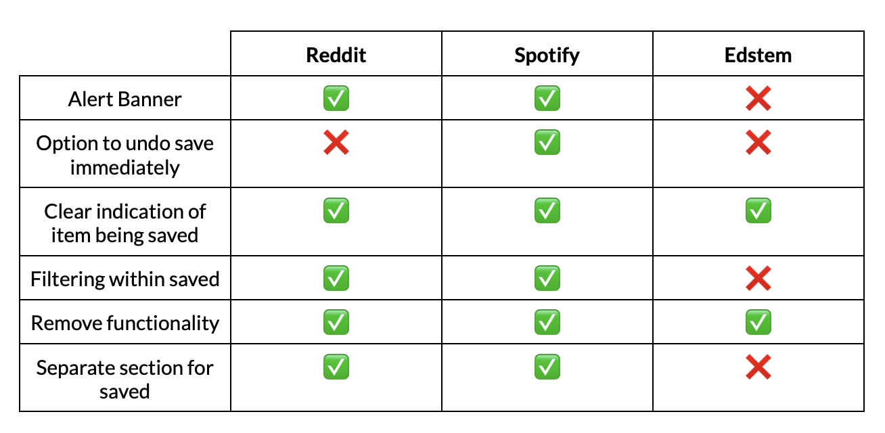

<!DOCTYPE html>
<html lang="en">
  <head>
    <meta name="viewport" content="width=device-width, initial-scale=1.0" />
    <title>Portfolio</title>
    <!-- import CSS styles -->
    <link rel="stylesheet" href="ab-styles.css" />
  </head>
</html>
<body>
  <div class="sidebar-navigation">
    <h2 style="margin-left: 28%; color: black">Content</h2>
    <a href="#content-1"> <nav>Competitive Analysis</nav></a>
    <a href="#content-2"><nav>Deployed Website</nav></a>
    <a href="#content-3"><nav>Metrics and Hypotheses</nav></a>
    <a href="#content-4"><nav>Statistical Analysis</nav></a>
  </div>
  <div class="main-content">
    <h1>Development</h1>
    <h2 id="content-1">Competitive Analysis</h2>
    
    <p>
      The goal of this project is to illustrate the effectiveness of A/B testing
      in determining the differences in user interactions between two different
      designs. In our experiment, we made small alterations to a simple webpage
      and asked users to complete a basic task (scheduling a specific
      appointment) and measured numerous user metrics. Using this data and
      statistical tests, we are attempting to prove that our redesigns improve a
      user’s ability to complete the task.
    </p>

    <h2 id="content-2">Deployed Website</h2>
    <a href="https://cs1300-development-h5sk.vercel.app"
      ><strong>https://cs1300-development-h5sk.vercel.app</strong></a
    >
  </div>
</body>
